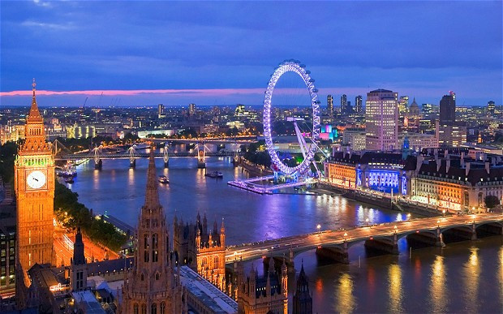
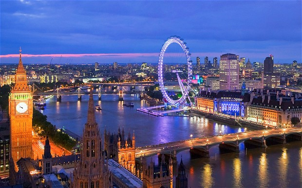

Istoria Londrei
La origini Londra a fost o așezare celtă. În 43 d.Hr. romanii au fondat orașul Londinium, iar numele acestuia se pare că a dat și numele nativ al orașului, London, deși unele date recente arată că London ar putea fi de origine celtă. În 61 d.Hr., noul oraș roman este asediat, prădat și ars pînă la temelii de către răsculații celți conduși de regina Boadicea. Londinium a fost abandonat după căderea Imperiului Roman. La vest de vechiul oraș a apărut în secolul al VII-lea o așezare saxonă cu numele Lundenwic, pe locul unde azi se află Aldwych. La începutul secolului al X-lea vechea cetate romană a fost reocupată. Inițial Westminster era un oraș distinct, însă în cele din urmă Londra și Westminster s-au integrat și au evoluat împreună, devenind cel mai mare oraș al Angliei, iar din secolul al XII-lea și capitală a regatului. Între secolele al XVI-lea și al XX-lea, Londra a înflorit, fiind capitală a Imperiului Britanic. Marele incendiu din 1666 a distrus o mare parte a orașului. Reconstrucția a durat peste 10 ani și a fost condusă de Sir Christopher Wren, care, cu acea ocazie, a proiectat și construit multe din clădirile emblematice ale Londrei de astăzi, așa cum ar fi spre exemplu Catedrala Sf. Paul. Creșterea orașului s-a accelerat în secolul al XVIII-lea, astfel că la începtul anilor 1800 Londra era cel mai mare oraș al lumii. Londra a fost o țintă a atacurilor teroriste ale IRA, iar mai recent a suferit o serie de atentate asupra sistemului de transport, soldate cu 52 de morți și atribuite grupării islamiste al-Qaeda.

Londra în epoca romană
Romanii au organizat Londinium ca oraș civil la vreo 7 ani de la invazia din anul 43 e.n. Primii romani au ocupat o regiune relativ mică, care cu greu s-ar putea compara cu mărimea Hyde Park. Cam prin anul 60 e.n., orașul a fost distrus de tribul Iceni condus de regina Boadicea. Totuși, așezarea a fost repede reconstruită după planurile romane și a fost recuperată după aproximativ 10 ani, orașul mărindu-se rapid în următoarele decenii. În secolul al II-lea, Londinium era la apogeu și a devenit capitala Provinciei Britannia în locul orașului Camulodunum (Colchester). Orașul avea cam 60 000 de locuitori. Au fost construite clădiri publice importante, inclusiv cea mai mare bazilică de la nord de Alpi, temple romane, terme, amfiteatre și un fort mare pentru garnizoana orașului. Instabilitatea politică și recesiunea care au apărut în secolul al III-lea au condus la un declin lent.
La sfârșitul secolului al III-lea, Londinium a fost atacat de câteva ori de pirați saxoni. Cam din anul 255 romanii au început să construiască un zid suplimentar pe malul apei. Zidul va rezista în următorii 1600 de ani și va defini perimetrul Londrei pentru secolele următoare. Șase din cele șapte porți ale Londrei au denumiri de origine romană: Ludgate, Newgate, Aldersgate, Cripplegate, Bishopgate și Aldgate. Până în secolul al V-lea, Imperiul Roman intrase în declin, astfel că în anul 410 e.n. romanii s-au retras din Provincia Britannia. Urmând aceeași tendință, și orașul roman a intrat în declin, așa încât, până la sfârșitul secolului, a fost practic abandonat.
What?
City of London este centrul istoric al orașului, și în același timp cel mai important cartier financiar al Regatului Unit.
About
Londra este un motor urias al economiei lumii. Londra a produs 365 miliarde $ în 2004 (17% din PIB-ul Regatului Unit), iar intreaga zona metropolitana londoneza a produs circa 30% din PIB-ul Regatului, adica mai mult decit PIB-ul Braziliei sau Rusiei.
More
Londra găzduiește cinci orchestre simfonice: London Symphony Orchestra, London Philharmonic Orchestra, Royal Philharmonic Orchestra, Philharmonia și BBC Symphony Orchestra. Principalele săli de concerte simfonice sînt Royal Albert Hall, Barbican Centre, Royal Festival Hall și Queen Elizabeth Hall. Royal Opera House din Covent Garden este casa Operei Regale și a Baletului Regal.
În Londra și-au început activitatea trupe rock celebre precum The Clash, Led Zeppelin, The Libertines, sau Pink Floyd. Săli de concerte rock celebre sunt Brixton Academy, Astoria sau Hammersmith Apollo.
Londra găzduiește carnavaluri și parade celebre, cum ar fi Carnavalul din Notting Hill, sau paradele de Sfântul Patrick (17 martie) sau Sfântul Gheorghe (23 aprilie).
În Londra se găsesc peste 30 de teatre, majoritatea concentrate în West End. Cele mai multe sunt comerciale și pun în scenă musical-uri și alte piese populare. Teatre "ne-comerciale" sunt National Theatre, The Globe (reconstrucție fidelă a vechiului teatru al lui Shakespeare), Old Vic și Young Vic.
Obiective turistice:
| Nr.crt. | Obiectiv |
|---|---|
| 1 | Big Ben |
| 2 | Palatul Buckingham |
| 3 | Roata din Londra |
| 4 | Tower Bridge |
| 5 | Turnul Londrei |
| 6 | Palatul Westminster |
| 7 | London Dungeon |
Personalități marcante din Londra:
-
Actori
- Kate Beckinsale
- Ben Chaplin
- Tom Felton
- Hugh Grant
- Jude Law
- Scriitori
- Michael Moorcock
- Ann Radcliffe
- Tom Sharpe
- David Thomson
- Elizabeth Bowen
- Muzicieni
- Adam Ant
- James Blake
- David Bowie
- Gary Crosby
- Ian Dury